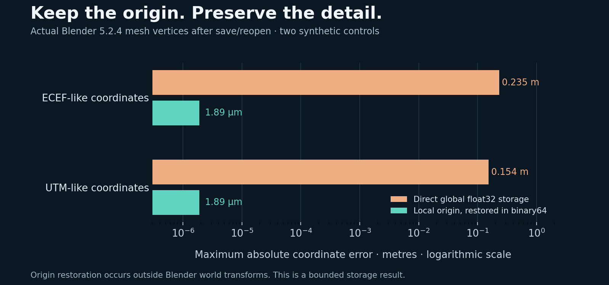

17 Nov 2026. Demo card for the sci-vis integration review. Numbers below are reported by the review's receipts; they were not re-run for this page. Source: x3d.STEM integration/blender-scivis/v2.
Blender 5.2.4 LTS (build cd5dc428cce1) saved and reopened each fixture; MeshVertex.co was compared with an independent struct binary32 reference. Two synthetic metric frames.
| Frame | Direct max error (m) | Local storage + binary64 origin (m) |
|---|---|---|
| ECEF-like | 0.2345000003 | 0.000001890585 |
| UTM-like | 0.1543210996 | 0.000001890643 |

Boundary: the origin is added back in Python binary64 outside Blender. Moving the object back to a very large world translation can reintroduce the loss. Centering keeps units; rescaling needs its own explicit conversion.
| Item | Result |
|---|---|
| Runtime | Blender 5.3.0, build 02f0899d78e3, archive SHA-256 matches the vendor value |
| Fixture | 4 asymmetric SH3 PLY splats, 20 XML arrays independently checked |
| Apply Transform | Represented covariance changed by 0.22836776 fixture units² (a deliberately kept loss) |
| Not established | Renderer PSNR, large-splat scale, SPZ quality, CI matrix |
| Check | Result | Tool |
|---|---|---|
| Inventory adapter tests | 13 pass | CPython 3.13.18 |
| Figure-link adapter tests | 8 pass | CPython 3.13.18 |
| x3dprov escape tests | 5 pass; 4 fail without the one-line fix | CPython 3.13.18 |
Hash identity is not publisher authentication; a passing probe that reproduces a transform loss is not a preservation claim.